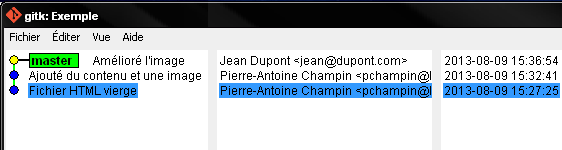
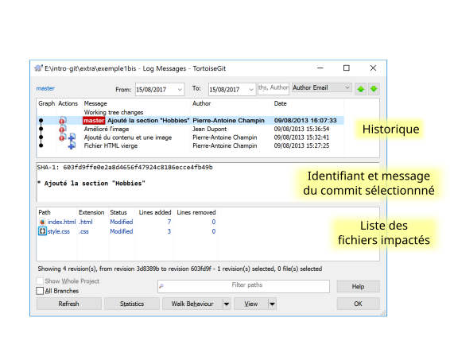
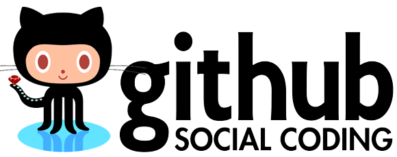

Introduction à GIT§
Département Informatique (IUT Lyon 1)
Ce travail est sous licence Creative Commons Attribution-ShareAlike 3.0 France.
Ce travail est sous licence Creative Commons Attribution-ShareAlike 3.0 France.

Note
Rapport.doc ou
Rapport_VFinale.doc ?Rapport_VFinale1.doc et Rapport_VFinale2.doc
(expérience vécue) ?Note
Après que nous avons échangé avec un collègue des versions d'un fichier
nommées X_1.1.doc, X_1.2.doc, X_1.3.doc (et ainsi de suite),
il a nommé la version finale X_1.0.doc ...
Un autre collègue m'a envoyé, le 15 mars 2013,
un fichier nommé 2013-03-17-xxx .
Je l'ai modifié le 16 mars ; quel nom lui donner ?...
→ VCS (Version Control System)
Systèmes centralisés
Systèmes décentralisés
→ facilitent une utilisation individuelle
Note
Le répertoire .git est un répertoire caché,
qui contient tout l'historique des fichiers.
Le répertoire caché .git est nommé dépôt
(en anglais repository).
Il contient toutes les données dont GIT a besoin pour gérer l'historique. Sauf rarissimes exceptions, vous ne modifierez jamais son contenu directement, mais uniquement en passant par les commandes GIT.
L'historique d'un projet est une séquence de « photos », contenant l'état de tous les fichiers du projet.
Ces « photos » s'appellent des commits, et possèdent :
On parle également de révision.

Visualisation d'un historique simple dans un outil graphique.
NB : on ignore pour l'instant le rectangle master ;
on l'expliquera par la suite.
Bien que conceptuellement, chaque commit contient tous les fichiers du projet, GIT utilise un système de stockage très efficace :
git gc) pour réduire encore la redondance (lorsque deux versions successives d'un fichier sont très proches).NB : bien que GIT (et les autres VCS) soient plus particulièrement conçus pour des fichiers texte, ils fonctionnent aussi avec des fichiers binaires (images, bureautique, etc.).
On appelle copie de travail (en anglais working copy) les fichiers effectivement présents dans le répertoire géré par GIT.
Leur état peut être différent du dernier commit de l'historique.

L'index est un espace temporaire contenant les modifications prêtes à être « commitées ».
Ces modifications peuvent être :

Note
On remarque le code couleur de l'application gitk :
NB: la sémantique du rouge et du vert est la même pour la ligne de commande. Cependant, certains outils GIT ne respectent pas ce code couleur; c'est notamment le cas de TortoiseGit que nous allons utiliser par la suite.
Dans ce cours, nous considérerons deux méthodes possibles :
Note
Il existe d'autres interfaces graphiques pour GIT,
notamment Git Gui qui est installé sur les machines de l'IUT,
mais que nous ne présenterons pas dans ce cours.
De plus, la plupart des IDE fournissent un accès aux commendes GIT, mais nous ne les traiterons pas non plus.
Initialise la gestion de version dans un répertoire
en créant le sous-répertoire .git.
Mise en œuvre
Dans le menu contextuel du répertoire concerné, Git Create repository here...
En ligne de commande, depuis le répertoire concerné:
$ git init
Une fois les fichiers modifiés et dans un état satisfaisant, vous pouvez les commiter.
Remarque : lorsque vous effectuez un commit, il est essentiel d'écrire un message accompagnant le commit. Ce message doit être informatif quant à la nature des modifications que vous êtes en train de commiter.
Par exemple, blip est un mauvais message de commit, mais Correction des fautes d'orthographe dans la doc technique est un bon message de commit.
Note
En cas de problème, il est possible de corriger un commit (tant qu'il n'a pas été partagé avec d'autres collaborateurs), mais nous étudierons cela plus tard.

Ajouter un fichier dans l'index
$ git add <filename>
Retirer un fichier de l'index
$ git reset <filename>
Pour voir l'état des modifications en cours
$ git status # résumé
$ git diff # détail des changements
Pour commiter les modifications indexées
$ git commit #ou
$ git commit -m "message de commit"
Menu contextuel > TortoiseGit > Show log
(cf. figure suivante)
En ligne de commande :
afficher la liste des commits
$ git log
(avec l'identifiant de chaque commit)
afficher le détail d'un commit particulier
$ git show <id-commit>


Figure inspirée de git-scm.org.
<link>).
Commitez ces changements.Note
Il faut observer le .git. S'il n'apparaît pas, veiller à configurer l'explorateur de fichiers pour qu'il affiche les fichiers et dossiers cachés.
L'intérêt d'utiliser un VCS est de pouvoir consulter n'importe quelle version antérieure du projet.
⚠ Attention cependant :
Dans les deux cas, vous risqueriez de perdre ces modifications (GIT affiche d'ailleurs des messages d'avertissement).
Menu contextuel > TortoiseGit > Switch/Checkout...
En ligne de commande :
$ git checkout <revision>
Il existe plusieurs méthodes pour spécifier une révision à GIT :
(liste non exhaustive)
Chaque commit a un identifiant, affiché
- par l'interface graphique (cf. figure),
- par la commande
git log.
On peut spécifier une révision en utilisant
- l'identifiant complet du commit, ou
- les premiers caractères de l'identifiant, tant qu'il n'y a pas d'ambiguïté
Exemple :
$ git checkout 9a063f5fd514e966837163ceffaec332ce66fdff # ou
$ git checkout 9a063
HEAD~ ou HEAD~1 désignent le parent du commit courant.
Ainsi :
$ git checkout HEAD~
permet de remonter d'un commit dans l'historique.
NB : HEAD~2 remonte de deux commits, HEAD~3 de trois commits,
et ainsi de suite.
Menu contextuel > TortoiseGit > Switch/Checkout...
Branch est bien coché,master est bien sélectionné dans la liste correspondante,En ligne de commande :
$ git checkout master
NB : ceci est en fait un cas particulier de l'action Changer de branche que nous étudierons un peu plus tard.
Nous venons de voir les fonctionnalités les plus basiques de GIT, qui permettent de gérer efficacement correctement l'historique d'un ensemble de fichiers → à utiliser sans modération.
Dans la suite, nous allons étudier des fonctionnalités un peu plus avancées, qui seraient impraticables avec une gestion « manuelle » de l'historique.
- elle peuvent donc vous sembler superflues,
- mais s'avèrent vite indispensables quand on y a pris goût.
Dans certaines situations, on peut souhaiter faire cohabiter et évoluer plusieurs versions divergentes du même projet.
Ces versions peuvent parfois converger à nouveau (mais pas forcément).
Note
Les copies d'écran de ces exemples sont faites avec un autre logiciel que les précédentes, ce qui explique le code couleur différent.
Pour un CV, on souhaite avoir :
Note
L'historique n'a plus une structure linéaire, mais arborescente (ce qui justifiera la métaphore de la « branche »).
Pour un site web, on souhaite avoir :
Les deux versions mènent leur existence en parallèle, la version publiée étant régulièrement mise à jour par rapport à la version de travail.
Note
L'historique n'est même plus un arbre, mais un graphe orienté sans cycle.
Dans un projet logiciel, on souhaite avoir :
Une fois au point, chaque nouvelle fonctionnalités est intégrée à la version stable.

master par défaut).Note
Par « lignée », on entend : l'ensemble des commits ancêtres du sommet de la branche.
Dans le cas simple, cette lignée a une structure linéaire,
mais ce n'est pas toujours le cas
(comme en témoignent, dans les illustrations ci-avant,
la branche publié dans l'exemple du site web
et la branche master dans
l'exemple du logiciel).
Un commit est accessible s'il appartient à au moins une branche. Les commits non accessibles sont automatiquement supprimés par GIT.
Note
Cette suppression n'est cependant pas immédiate. Il est donc parfois possible de « sauver » un commit devenu récemment inaccessible, en créant une nouvelle branche avant sa suppression effective.
Lorsqu'on navigue dans l'historique, on lie la copie de travail à un commit particulier plutôt qu'à une branche (mode detached HEAD).
→ Les commits que l'on ferait dans cet état n'appartiendraient à aucune branche et seraient donc perdus.
Dans les interfaces graphiques :
elle apparaît chaque fois qu'elle est nécessaire
(par exemple, dans la boite de dialogue Switch/Checkout... vue précédemment).
En ligne de commande :
$ git branch
Le nom de la branche courante apparaît précédé d'une étoile.
Cette opération consiste à placer, sur un commit existant, le sommet d'une nouvelle branche (qui pourra croître indépendamment des autres).
Menu contextuel > TortoiseGit > Create Branch...
- on doit choisir un nom pour la nouvelle branche ;
- dans la section « Base on », on peut choisir sur quel commit la nouvelle sera créée (par défaut: commit courrant
HEAD) ;- si on coche la case Switch to new branch (en bas à droite) la nouvelle branche deviendra la branche courante.
Pour créer une nouvelle branche sur le commit courant :
$ git branch <nom_nouvelle_branche>
Pour créer une nouvelle branche à un autre emplacement :
$ git branch <nom_nouvelle_branche> <revision>
Ces commandes ne changent pas la branche courante. Pour créer une nouvelle branche et en faire la branche courante, utilisez plutôt :
$ git checkout -b <nom_nouvelle_branche> # ou
$ git checkout -b <nom_nouvelle_branche> <revision>
Cette opération consiste à modifier la copie de travail pour la mettre dans le même état que le sommet d'une branche.
Indice
Pour pouvoir l'effectuer, il est nécessaire que la copie de travail ne contienne aucune modification non commitée.
Menu contextuel > TortoiseGit > Switch/Checkout...
Branch est bien coché,En ligne de commande :
$ git checkout <branche>
git checkout§La commande git checkout est utilisée dans divers contextes,
qui rendent difficile à percevoir sa cohérence interne.
La fonction première de cette commande est de modifier l'état de la copie de travail. Selon ses arguments, elle a des effets supplémentaires :
style, et placez-vous dans cette branche.master.
Constatez que vos changements de style ont disparu (pour l'instant).master,
modifiez ou ajoutez du contenu au fichier HTML,
et commitez vos modifications.style.
Constatez que vos changements de style ont réapparu,
mais que vos dernières modifications dans le fichier HTML ont, elles, disparu.L'opération de fusion (en anglais merge) permet d'intégrer les modifications d'une branche dans une autre.
Note
GIT permet également de fusionner plus de deux branches dans une même opération, mais nous n'irons pas jusque là dans ce cours.
Il y a deux situations possibles, selon les positions relatives de la branche à fusionner (source) et de la branche destination.
Si la branche destination est contenue dans la branche source,
la fusion a simplement pour effet de déplacer le sommet de la branche cible.

Ce type de fusion est appelée fast forward.
Note
Ce comportement préserve autant que possible un historique linéaire, donc plus simple.
Cependant, dans certains cas, on souhaite forcer la création d'un commit même lorsqu'on est dans cette situation (c'est notamment le choix qui a été fait dans l'exemple du site web).
Pour cela, en ligne de commande, on ajoutera l'option --no-ff.

Avantage : les deux branches gardent leur identité dans le graphe.
Si la branche destination et la source ont divergé,
la fusion crée un nouveau commit intégrant les modifications des deux branches ;
ce commit devient le sommet de la branche destination.

Note
Bien sûr, cela suppose que les modifications des deux branches soient compatibles. La section suivante traite des conflits, et de comment les résoudre.
Menu contextuel > TortoiseGit > Merge...
Branch est bien coché,En ligne de commande :
$ git merge <branche>
style
(créée à l'exercice précédent)
avec la branche master.master,
et appliquez la méthode de votre choix
(ligne de commande ou interface graphique)
pour y fusionner la branche style.La fusion de branches est automatiquement gérée par GIT lorsque les modifications des deux branches portent sur :
Branche 1 :
- La première ligne
+ La première ligne modifiée
La deuxième ligne
La troisième ligne
Branche 2 :
La première ligne
La deuxième ligne
- La troisième ligne
+ La troisième ligne modifiée
Fusion :
La première ligne modifiée
La deuxième ligne
La troisième ligne modifiée
Branche 1 :
- La première ligne
+ La première ligne modifiée
La deuxième ligne
- La troisième ligne
+ La troisième ligne modifiée
Branche 2 :
- La première ligne
+ La première ligne changée
La deuxième ligne
La troisième ligne
On a donc un conflit lorsque les deux branches modifient :
Dans ce cas, le conflit doit être résolu à la main avant de pouvoir créer le commit de fusion.
Avertissement
La stratégie de GIT n'est qu'une heuristique.
Cela signifie que des branches jugées compatibles par GIT peuvent être sémantiquement incohérentes. Il convient donc de vérifier le résultat de la fusion, même lorsqu'aucun conflit n'est signalé.
Lorsque GIT rencontre un conflit au moment d'une fusion, un message indique les fichiers en conflit.
On est dans un état instable qui suppose :
- de résoudre le conflit, ou
- d'abandonner la fusion.
Les fichiers texte comportant un conflit sont automatiquement modifiés pour :
- inclure les modifications non conflictuelles, et
- faire apparaître les deux versions concurrentes pour les modifications conflictuelles.
<<<<<<< HEAD
La 1e ligne modifiée
=======
La 1e ligne changée
>>>>>>> src
La 2e ligne
La 3e ligne modifiée
Les fichiers binaires ne sont pas modifiés.
Une fois les fichiers en conflit corrigés, on peut résoudre le conflit :
Menu contextuel > TortoiseGit > Resolve...
En ligne de commande :
$ git commit -a
Le nouveau commit aura pour parents les sommets des branches fusionnées.
On peut également décider d'abandonner la fusion :
Menu contextuel > TortoiseGit > Abort Merge
En ligne de commande :
$ git merge --abort
Créez un nouveau dépot, et ajoutez-y un fichier conflit.txt contenant le texte suivant :
La première ligne
La deuxième ligne
La troisième ligne
Créez plusieurs branches,
dans lesquelles vous modifierez différemment le fichier conflit.txt,
en suivant les exemples ci-avant.
Tentez ensuite de fusionner ces branches.
Lorsque GIT vous signale un conflit,
constatez comment le fichier conflit.txt a été modifié,
et résolvez le conflit.
Un dépôt distant (en anglais remote repository) est un dépôt GIT, tout à fait similaire à un dépôt local, mais acessible à distance via une URL.
Exemple : https://github.com/pchampin/intro-git.git
Un dépôt local peut être lié à un dépôt distant ; GIT offre des fonctionnalités pour copier des commits de l'un à l'autre.
Note
En fait, un dépôt distant n'est pas forcément « à distance » (même si c'est le plus souvent le cas).
On peut aussi utiliser comme dépôt distant un dépôt accessible dans un répertoire partagé, ou sur un support amovible (clé USB, disque dûr externe)...
Il existe plusieurs sites permettant d'héberger et de partager vos projets GIT :
 |
|
dont un hébergé par l'université Lyon 1 :
Note
Concernant la forge de Lyon 1, en cas de problème avec les certificats SSL, consultez cette FAQ
Une fois votre dépôt distant créé, vous pouvez en faire un clone (une copie à la fois des fichiers et de l'historique) sous forme d'un dépôt local, qui sera lié à ce dépôt distant.
Mise en œuvre
Menu contextuel > Git Clone...
en ligne de commande :
$ git clone <url-dépôt-distant> <emplacement>
Note
Il est possible de procéder à l'inverse : commencer à travailler sur un dépôt local, puis créer un dépôt distant pour publier le travail.
La procédure est un peu plus complexe, mais est généralement bien documentée par les services d'hébergement GIT, au moment où vous créerez le dépôt distant.
Si vous rencontrez des problèmes pour cloner un dépôt,
cela peut venir d'une mauvaise configuration du proxy.
Dans Git Bash, tapez les deux commandes suivantes :
$ git config --global http.proxy http://proxy.univ-lyon1.fr:3128
$ git config --global https.proxy https://proxy.univ-lyon1.fr:3128
puis tentez à nouveau.
Cette opération copie sur le dépôt distant les commits locaux (de la branche courante) qui n'y sont pas encore présents.
Mise en œuvre
Menu contextuel > TortoiseGit > Push...
En ligne de commande :
$ git push
Indice
Cela suppose évidemment que vous soyez propriétaire du dépôt distant, ou que le propriétaire ait configuré son dépôt pour vous autoriser à le modifier.
Le push n'est possible que si la branche locale contient tous les commits présents dans la branche distante (plus, bien sûr, les nouveaux commits que vous voulez pousser).
Si la branche distante contient des commits inconnus de votre dépôt local (poussés depuis une autre machine, par vous ou quelqu'un d'autre), il faudra au préalable les récupérer (cf. ci-après).
Cette opération copie dans le dépôt local les commits distants (de la branche courante) qui n'y sont pas encore présents. Elle met également à jour la copie de travail.
Cela est nécessaire
Mise en œuvre
Menu contextuel > TortoiseGit > Pull...
En ligne de commande :
$ git pull
Dans le cas le plus simple, le dépôt distant est « en avance » par rapport au dépôt local : il contient tous les commits du dépôt local, plus ceux que vous cherchez à récupérer.
Dans un cas plus complexe, des commits ont pû être ajoutés parallèlement dans les deux dépôts.
Dans ce cas, pull effectue automatiquement une opération de fusion.
Cela peut entraîner un conflit, qu'il faudra résoudre comme vu
précédemment.
Indice
Il est bien sûr préférable d'éviter ces conflits plutôt que de les résoudre a posteriori. Modifier la même information en parallèle n'est, de toute façon, pas une bonne idée...
On a vu dans la section précédente qu'un dépôt local pouvait être lié à un dépôt distant.
En fait, un dépôt GIT peut être lié à un nombre arbitraire de dépôts distants, chacun identifié par un nom.
Lors d'un clone,
le dépôt cloné est automatiquement ajouté comme dépôt distant,
sous le nom origin.
Pour chaque branche de chaque dépôt distant, GIT crée dans le dépôt local une branche spéciale appelée branche de suivi (en anglais remote-tracking branch). Son nom est de la forme :
<nom-dépôt-distant>/<branche>
Cette branche reflète l'état de la branche distante correspondante ; elle n'est jamais modifiée directement.
Elle peut en revanche être fusionnée à une branche locale, afin d'y intégrer les modifications faites par d'autres.
Menu contextuel > TortoiseGit > Settings > Git > Remotes
(interface complète de gestion des dépôts distants)
En ligne de commande :
$ git remote add <nom> <emplacement>
Indice
Cette opération est à faire une seul fois par dépôt (et par dépôt distant), pour pouvoir ensuite interagir avec le dépôt distant.
On a vu précédemment la commande git pull
qui récupère les commits distants et les fusionne dans la branche courante.
La commande git fetch permet de simplement récupérer les commits distants et de mettre à jour les branches de suivi,
sans impacter les branches locales.
Note
En fait, git pull n'est ni plus ni moins un raccourci qui effectue un git fetch
suivi d'un git merge.
Menu contextuel > TortoiseGit > Fetch...
Remote est bien coché,En ligne de commande :
$ git fetch <nom-dépôt-distant>
Indice
Les branches de suivi sont créées par le fetch.
Ainsi, si de nouvelles branches sont créées dans le dépôt distant, les branches de suivi correspondantes seront également ajoutées.
Le principe est le même que pour la fusion entre branches locales.
Menu contextuel > TortoiseGit > Merge...
Branch est bien coché,En ligne de commande :
$ git merge <branche-de-suivi>
La flexibilité de GIT permet de multiples formes d'organisation pour le travail collaboratif.
On donne ici quelques exemples (non exhaustifs, et non exclusifs).

Note
Ce type de collaboration est inspiré des VCS centralisés, et est simple à mettre en œuvre.
Il suppose de mettre un place un unique dépôt distant sur lequel plusieurs collaborateurs ont les droits en écriture.

Note
Ce type de collaboration est très flexible. On peut notamment le mettre en œuvre sans disposer d'un serveur, en utilisant par exemple des média amovibles (clé USB, carte DS, disque externe...) comme "dépot distant" pour communiquer entre les différents acteurs.

Note
Ce type de collaboration est encouragé par les sites d'hébergement comme Github (mais également d'autres).
Chaque collaborateur dispose d'un clone public (fork) du projet, et y publie les commits qu'il souhaite partager.
Il sollicite ensuite les autres collaborateur pour tirer ces commits dans leur propre dépôt/ On appelle cette sollicitation un pull request (ou plus rarement un merge request).
La plupart du temps, l'un des dépôts publics (celui du leader du projet, typiquement) est considéré comme la référence, donc ce type d'organisation se rapproche de l'organisation en étoile, mais permet à n'importe qui de proposer des modifications, sans avoir besoin d'obtenir les droits en écriture sur le dépôt de référence.
Le meilleur moyen d'expérimenter la collaboration est de travailler avec des collaborateurs !
Si vous voulez essayer, publiez votre dépôt sur l'espace partagé de votre choix, et demandez à un collègue d'en faire un clone.
C'est à vous de fixer les droits sur votre dépôt distant en fonction de ce que vous souhaitez (accessible en lecture seule, ou bien en lecture / écriture).
Note
L'objectif n'est pas de travailler sur ces notions, mais de signaler leur existence pour plus tard... et pour les curieux :-)
Avant de publier un ensemble de commits, on peut souhaiter le « nettoyer » un peu,
notamment pour rendre l'historique du projet plus lisible.
Avertissement
Ceci ne doit jamais être fait sur des commits
qui ont déjà été partagés avec d'autres personnes
(notamment avec git push).
Cela créerait une incohérence entre les dépôts.
Il arrive que l'on fasse un commit incomplet :
On peut bien sûr corriger cet oubli dans un nouveau commit, mais cela contredit l'idée qu'un commit représente un état cohérent de l'ensemble des fichiers.
Dans ces situations, il est possible de modifier (amender) le dernier commit créé.
Dans la boite de dialogue de commit :
En ligne de commande :
$ git commit --amend
On a vu que la fusion de deux branches créait un commit à plusieurs parents si les branches avaient divergé.
Si on préfère garder un historique linéaire, GIT permet de « rejouer » les modifications d'une branche à partir du sommet de l'autre branche, en re-créant les commits correspondants.
Menu contextuel > TortoiseGit > Rebase...
En ligne de commande (depuis la branche à « rebaser ») :
$ git rebase <branche-destination>
Mercurial
Rien de tel que la pratique pour maîtriser GIT (ou tout autre outil de gestion de version), alors n'hésitez pas à utiliser abondamment ces outils, même pour vos petits projets...
Ce support a été réalisé par Pierre-Antoine Champin et Amélie Cordier.
Merci à Isabelle Gonçalves et Jocelyn Delalande pour leurs contributions.
{kind=link}
{kind=link}
{kind=link}
{kind=link}
{kind=link}
{kind=link}
{kind=link}
{kind=link}
{kind=link}